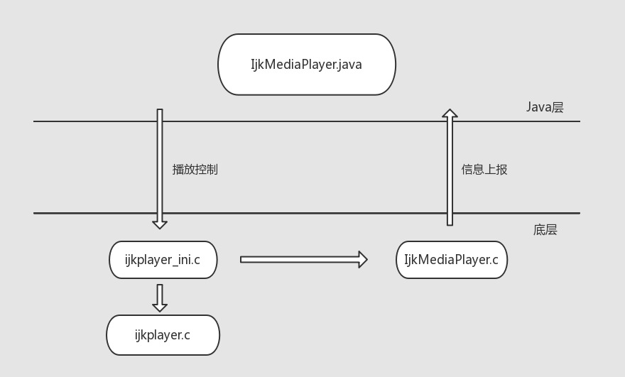
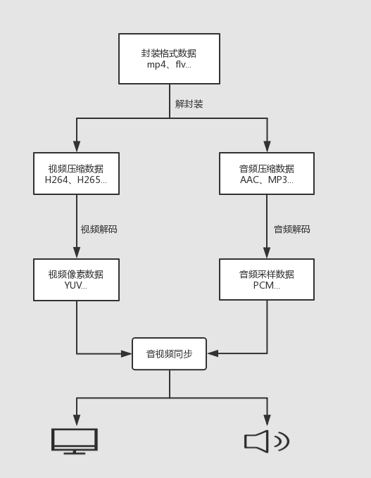
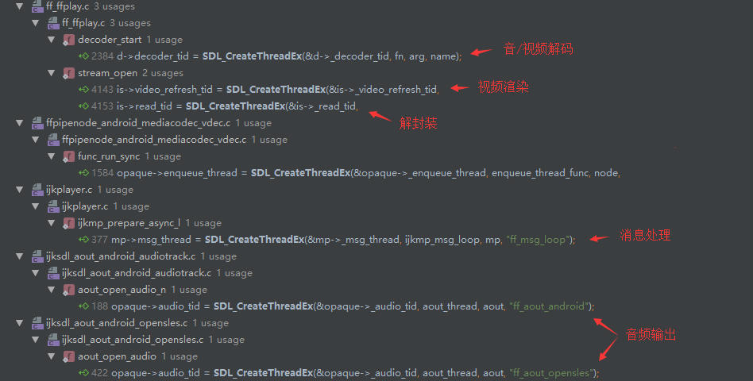
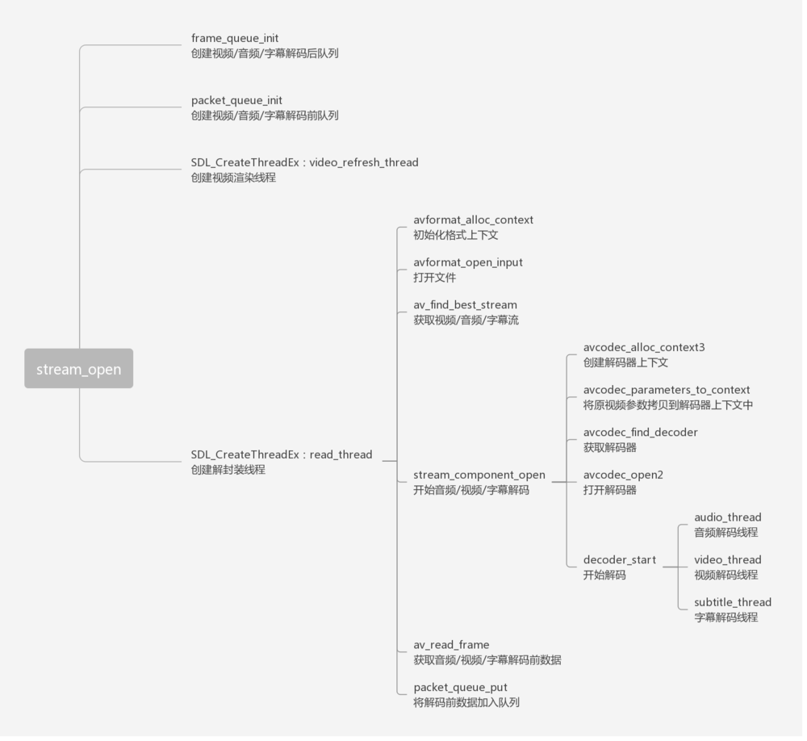

本文基于0.8.8版本的 ijkplayer ，对其源码进行剖析，涉及到不同平台下的封装接口或处理方式时，均以 Android 为例。
ijkplayer 是一款比较出众的开源 Android/IOS 跨平台播放器，基于 ffplay，API 易于集成，可定制编译控制体积。
ijkplayer 集成了三种播放器实现：
- AndroidMediaPlayer：即安卓系统自带的播放器 MediaPlayer，基于 MediaCodec、AudioTrack 等安卓系统 API.
- IjkExoMediaPlayer：即谷歌新推出的 ExoPlayer，同样是基于 MediaCodec、AudioTrack 等安卓系统 API，但相比 MediaPlayer 具有支持 DASH、高级 HLS、自定义扩展等优点。
- IjkMediaPlayer：基于 FFmpeg 的 ffplay，集成了 MediaCodec 硬解码器、Opengl 渲染方式等。
一般而言， ijkplayer 就是指 IjkMediaPlayer，本文分析的对象就是 IjkMediaPlayer.
对 Android 而言，音频输出支持 AudioTrack、OpenSL ES 方式；视频输出支持 NativeWindow、OpenGL ES 方式。
对 ijkplayer 不熟悉的同学建议参看源码阅读本文。
一、初始化
ijkplayer 在 Java 层的操作封装于 IjkMediaPlayer.java ，其中包含一些与底层通信的关键方法，比如播放控制相关的 start、pause、stop 等， 这些 native 方法对应的底层实现位于 ijkpalyer_ini.c 文件中。
在 IjkMediaPlayer.java 中有一些 @CalledByNative 注解的方法，比如底层的播放状态回调，这些方法由底层主动调用，具体位于 IjkMediaPlayer.c 文件中。

ijkplayer 的初始化位于 initPlayer 方法，共做了四件事：
- 加载 so 库
- 静态初始化底层，底层其实什么都没做
- 初始化 Message Handler，处理底层状态信息的上报
- 初始化底层，这部分做的工作最多，主要逻辑位于 ijkpalyer_android 的 ijkmp_android_create 方法，如下：
1 | // 创建底层播放器对象，设置消息处理函数 |
具体是怎么选择软解码器还是硬解码器的呢，跟踪 ffpipeline_create_from_android 方法可以看到：
1 | if (ffp->mediacodec_all_videos || ffp->mediacodec_avc || ffp->mediacodec_hevc || ffp->mediacodec_mpeg2) |
ffp 的 mediacodec_all_videos 等属性是通过 IjkMediaPlayer 的成员方法 setOption() 设置的，成员方法的调用肯定是在类初始化之后的，而解码器等依赖配置项的设置却在初始化中，难道不是应该先设置，后初始化吗？代码肯定是没有问题的，初始化中其实并没有调用这些方法，只是以函数指针的方式记录下来而已。ijkplayer 几乎完全由 c 实现，函数指针随处可见，方便编程。
二、配置
初始化后 IjkMediaPlayer 后，可以对其进行一系列配置，例如:
1 | // 设置硬解码 |
setOption() 会调用到底层 ff_ffplay.c 的 ffp_set_option() 方法：1
2
3
4
5
6
7void ffp_set_option(FFPlayer *ffp, int opt_category, const char *name, const char *value) {
if (!ffp)
return;
AVDictionary **dict = ffp_get_opt_dict(ffp, opt_category);
av_dict_set(dict, name, value, 0);
}
AVDictionary 其实就是一个键值对数组，相当于 Java 中的 HashMap，av_dict_set 就相当于 put 方法，用来存储播放器的配置信息，FFPlayer 中就有如下 AVDictionary ：1
2
3
4
5
6AVDictionary *format_opts; // 格式配置，解封装文件时（avformat_open_input）需传入
AVDictionary *codec_opts; // 编解码器配置，打开编解码器时（avcodec_open2）需传入
AVDictionary *sws_dict; // avfilter 视频相关配置
AVDictionary *player_opts; // 播放相关配置
AVDictionary *swr_opts; // 音频相关配置
AVDictionary *swr_preset_opts;
通过 setOption() 方法将一系列的播放器配置暂存到这些 AVDictionary 中，对于没有 map 容器的 c 语言，可以充分利用它来配置和定义播放器的参数。FFmpeg 中很多 API 就是依赖 AVDictionary 来传递参数的，比如上面提到的 avformat_open_input、avcodec_open2 接口。
FFPlayer 结构体中本身就有配置相关的成员变量的，比如控制音频输出设备的 “int opensles” 等，当我们调用一系列 setOption() 方法将播放配置存储在 player_opts 中后，该如何取出再赋值给成员变量呢？
这个情景是否似曾相似，JavaEE 开发中如何从传递的一系列键值中取出赋值给成员变量？ JavaEE 的 Struts2 可以实现自动映射转换，可以将互联网上收到的 “名称”和“值”的组合自动赋值给相应名称的变量。FFmpeg 中也实现了这样一套自动映射的机制，可以实现直接将 AVDictionary 赋值给结构体，只需调用：1
int av_opt_set_dict(void *obj, struct AVDictionary **options);
当然这个结构体需要提前做一些处理，制定映射的规则，要在结构体中添加 AVClass 成员变量，且必须为第一个成员变量，然后对其初始化，比如 FFPlayer 结构体：1
2
3
4
5
6
7
8
9
10
11
12
13
14
15
16
17
18
19// 需要映射的成员变量
static const AVOption ffp_context_options[] = {
{ "mediacodec-avc", "MediaCodec: enable H264", OPTION_OFFSET(mediacodec_avc), OPTION_INT(0, 0, 1) },
{ "opensles", "OpenSL ES: enable", OPTION_OFFSET(opensles), OPTION_INT(0, 0, 1) },
// 省略...
}
const AVClass ffp_context_class = {
.class_name = "FFPlayer",
.item_name = ffp_context_to_name,
.option = ffp_context_options, // 将需要映射的成员变量记录到 AVClass 中
.version = LIBAVUTIL_VERSION_INT,
.child_next = ffp_context_child_next,
.child_class_next = ffp_context_child_class_next,
};
ffplayer->av_class = &ffp_context_class; // 使结构体可自动映射
这样处理后，就可以直接对 FFplayer 这个结构体进行整体赋值了，在 ff_ffplay.c 的 ffp_prepare_async_l 方法中就有这个逻辑：1
av_opt_set_dict(ffp, &ffp->player_opts);
扩展阅读：
FFmpeg源代码简单分析：结构体成员管理系统-AVClass
FFmpeg源代码简单分析：结构体成员管理系统-AVOption
三、播放
先来回顾下播放器的整体流程：

在 视频相关的理论知识与基础概念 中简单总结过视频播放原理，播放器必然是通过多线程同时进行解封装、解码、视频渲染等工作的，对于 Ijkplayer 来说，开辟的线程如下：

所有的播放逻辑都位于 ff_ffplay.c 中，当对播放器设置视频源路径、解码方式、输出模式等播放选项后，就可以开始播放了， 播放入口方法为 ffp_prepare_async_l，此方法中调用了比较重要的两个方法：1
2
3
4
5// 打开音频输出设备
ffp->aout = ffpipeline_open_audio_output(ffp->pipeline, ffp);
...
// 创建音/视频数据解码前/后队列， 创建解封装和视频渲染线程
VideoState *is = stream_open(ffp, file_name, NULL);
在初始化时 IjkPlayer 将选择视频解码器、选择音频输出设备的方法以函数指针的形式记录下来，方便后面直接调用。ffpipeline_open_audio_output 方法即选择了音频输出方式为 opensles 或 AndroidTrack ，具体实现为 ffpipeline_android.c 的 func_open_audio_output 方法。
stream_open 方法则相当重要了，梳理一下该方法中涉及到的关键方法：
